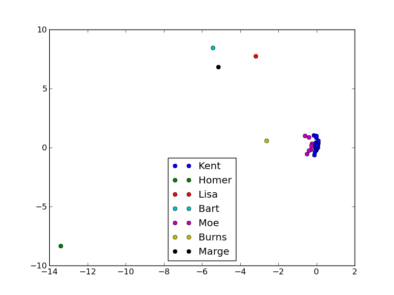
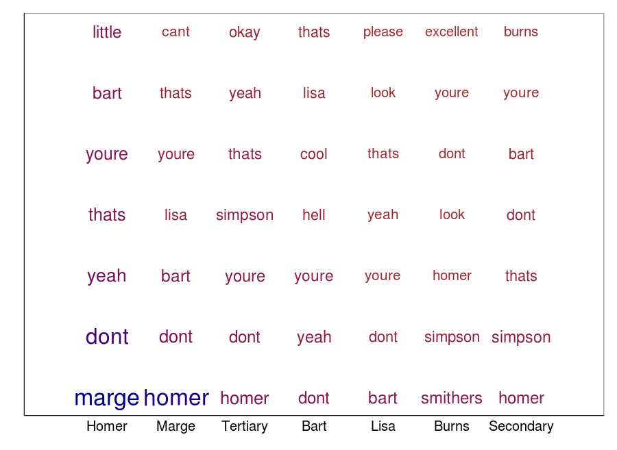
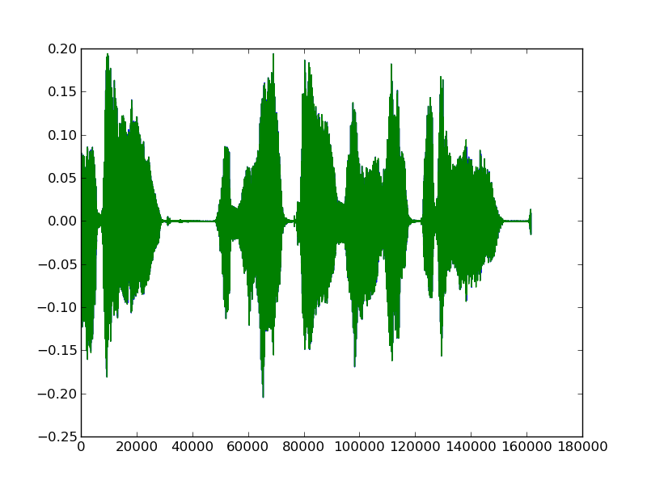
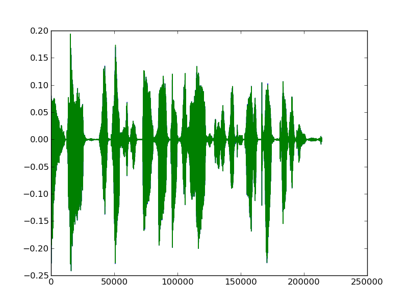
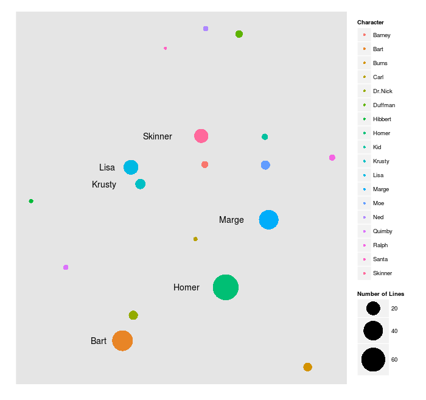
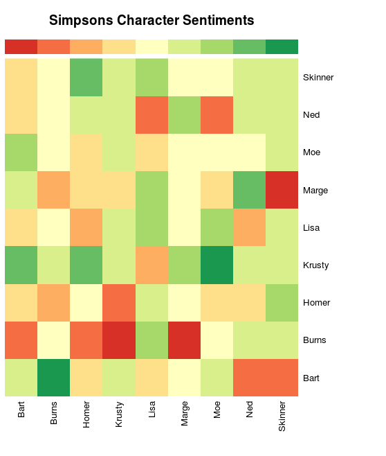
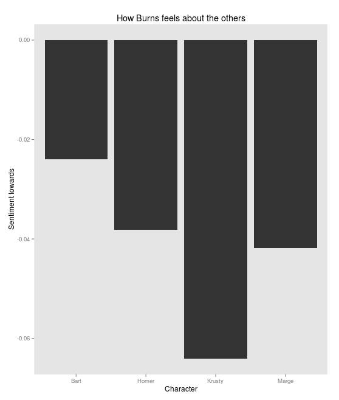
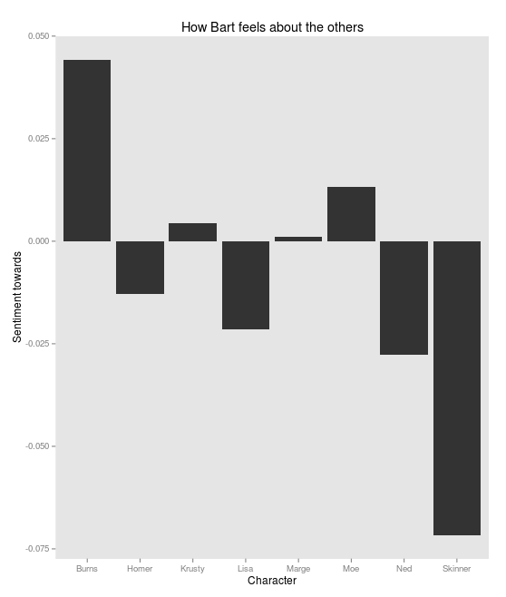

How much do characters on the Simpsons like each other?
Vik Paruchuri
Equirio
Before we start
- Follow along at vikparuchuri.github.io/ignite
- The blog posts this presentation is based on are at www.vikparuchuri.com
Who am I?
- Founder at Equirio
The Crazy Question
So I was sitting around bored one day....

Do they even like each other?
Option 1: Work with transcripts
Sadly, there aren't any with speakers labelled.
I think the boy's hurt.
Just give him a nickel and let's get going!
I think we should call an ambulance, sir.
Hey, cool.
So, we should just go through all the episodes and write down who is speaking each line, right? Right?
Nah. Don't worry, head. The computer will do our thinking now.
But training data is cool too, right?
Hand-label some lines as training data.

Commonly said words

Computer stuff
- Use natural language processing and machine learning to predict who is speaking unlabelled lines.
Phew, all this computer hacking is making me thirsty, I think I'll order a tab.
So, the accuracy kind of sucks
Good
Bart : Dad, how would you like to be sold to an ivory dealer?
Bart : Dad, you're sinking! Huh?
Marge : Get a rope, Bart. No, that's okay.
Bad
Marge : Hey, it's morning, and Mom and Dad aren't home yet.
Tertiary : Hey. This isn't the Y.M.C.A.
Homer : Dispatch, this is Chief Wiggum back in pursuit of the rebelling women.
Kids, you tried your best and you failed miserably. The lesson is, never try.
But wait, there's more!
We have been ignoring the information available via audio.
 
Subtitles + Audio = Happiness
Strip audio tracks from videos.
Get subtitle files and sync them to audio.
282
00:17:32,523 --> 00:17:35,651
I am so Krunchy the Clown!
[ Belches ]
283
00:17:35,760 --> 00:17:37,955
All right. That's it.
Find audio "fingerprint" for each character
Use features like zero crossing rate, MFCC, etc with our hand labelled lines.
Visualizing fingerprints in 2D

Figure out the scene
- Take each character, and figure out who is in the scene with them.
- Use labelled transcripts for this.
Sentiment analysis
- Do sentiment analysis on character dialogue to figure out if they like the people in the scene.
- Use random indexing and cosine similarity.
And on to the charts

Burns

Bart

Ways to do this better
- It would be good to try to directly infer emotion/sentiment from audio.
- Better ways to determine "in scene characters".
- Incorporate information from the video.
Conclusions
- Analyzing audio is fun.
- Error rate estimation is tricky (see vikparuchuri.com for details)
- Maximize the information that you have -- it's not always about the algorithm you use.
Where to learn more
- More information is on www.vikparuchuri.com
- Code is at github.com/vikparuchuri/simpsons-scripts
- Presentation is at vikparuchuri.github.io/ignite